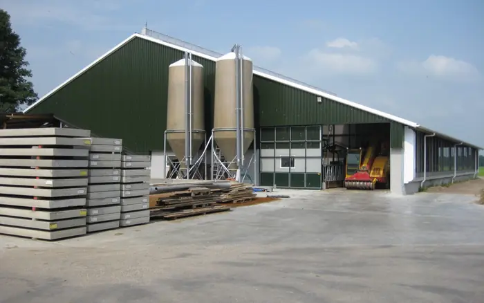
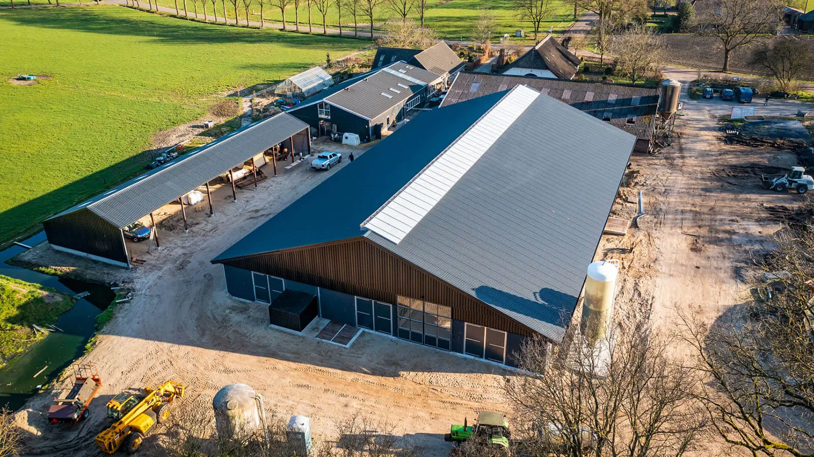
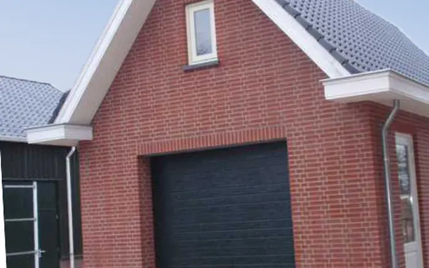
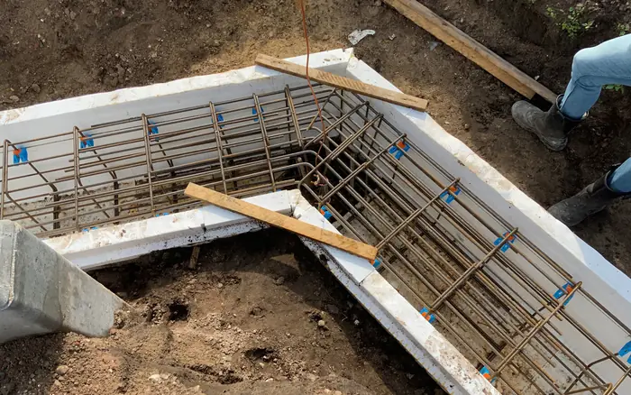

Stallen en bedrijfsgebouwen
Een koeienstal of een ander bedrijfsgebouw op het erf. Beide noemde een klant in een review op Google.

Stallen · Bedrijfsgebouwen · Garages · Wapening en beton
Een eigen aannemersbedrijf in Woerden, al sinds 1970. Voor stallen, bedrijfsgebouwen, garages en betonwerk belt u gewoon de vaste lijn.
Burgerlijke en utiliteitsbouw, zo staat het bedrijf bij de KvK. Een klant noemde ook bij naam wat er gebouwd wordt.

Een koeienstal of een ander bedrijfsgebouw op het erf. Beide noemde een klant in een review op Google.

Een garage of een bijgebouw, bij uw huis of op uw bedrijf.

Wapening en betonwerk. Dezelfde klant noemde ook een weg, en schreef dat het wapeningswerk snel gebeurt.
Iets anders te bouwen? Bel 0348 412 155 en vraag of Van der Tol het doet.
Een stal, een schuur, een garage of een betonvloer: vertel kort wat u van plan bent.